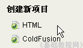

Dreamweaver 8 基础入门教程
九、插入Flash 返回
这一节我们来学习如何在页面插入Flash动画，Flash动画格式有swf和Flv，下面我们来看一个练习；
1、启动Dreamweaver
1）点击“开始－所有程序－Macromedia－Macromedia Dreamweaver 8”， ；
；
2）在中间的“创建新项目”中点第一个 HTML，打开一个空白文档，把标题改为“插入Flash”；

3）点“文件－保存”命令，以 chrflsh 为文件名保存文件，保存位置在建立的站点中；
4）在右面侧边栏的站点中，新建的文件夹 swf ，用来保存Flash动画文件；
本课images文件夹中有一个首 wz 文件可以作为练习，它是swf格式的；
2、插入动画
1）插入swf动画，点常用工具栏，插入图像按钮旁边的“媒体”按钮，选择第一个红色的“Flash”
2）弹出一个对话框，找到swf文件夹，选中里面的wz文件，出来一个属性框，点“确定”即可；
2）还可以插入Flv视频，点“媒体－Flash Video”，选择一个flv视频即可，完成后会自动生成两个swf文件，用来播放flv视频；
插入后，把下面的宽度和高度也填上，需要发布到网上才能播放，保存一下文件，点“预览”按钮，看一下影片的效果；
本节学习了插入Flash动画的基本方法，如果你成功地理解并完成了练习，请继续学习下一课内容；
本教程由86团学校TeliuTe制作|著作权所有
基础教程网：http://teliute.org/
美丽的校园……
转载和引用本站内容，请保留作者和本站链接。